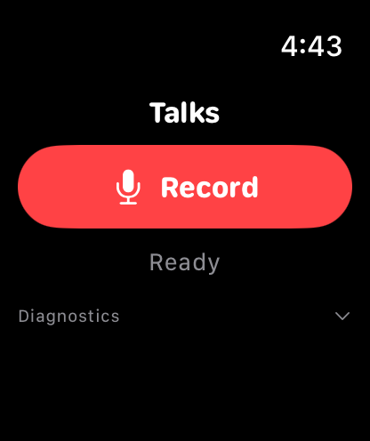
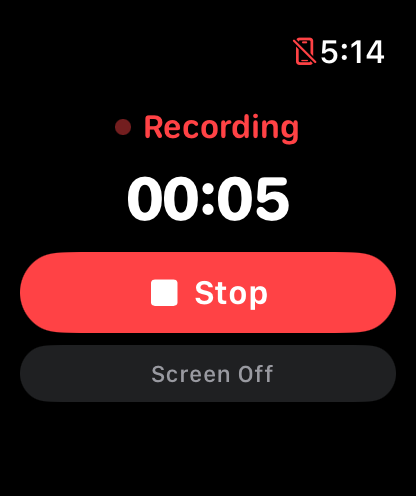
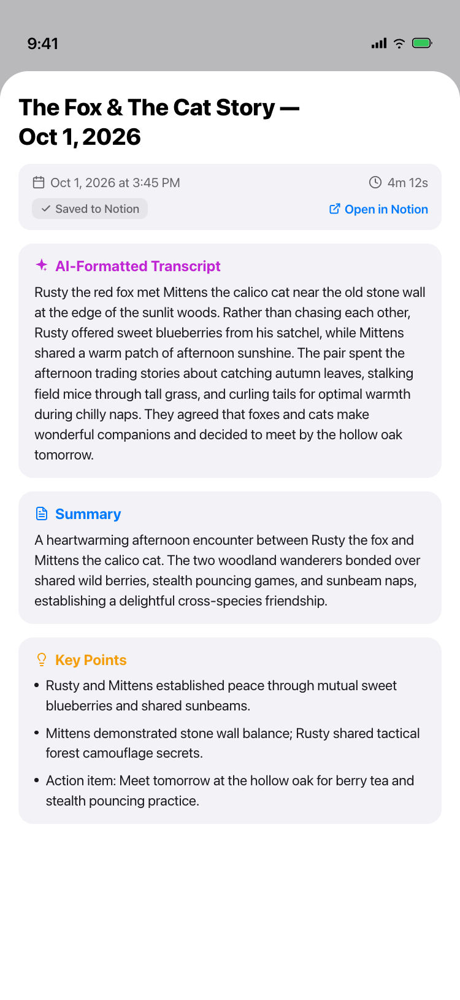
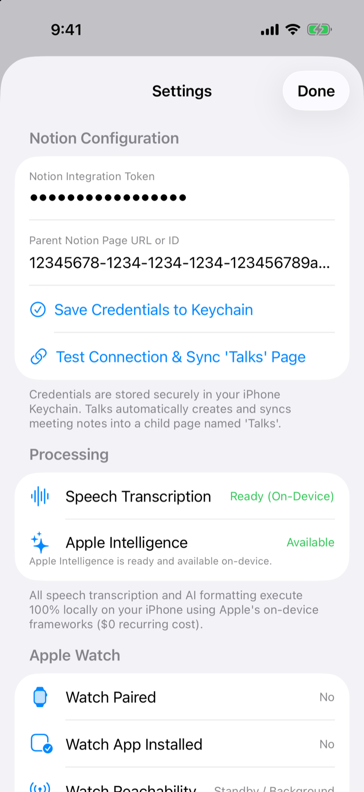

Talks: On-Device Meeting Intelligence Across Apple Watch & iPhone
Recording lectures, advising sessions, and research office hours should not require pulling out a phone, tolerating wireless audio dropouts, or transmitting sensitive conversations to third-party AI clouds. I engineered Talks as a reliable, distributed iOS and watchOS system: one-tap distraction-free recording from Apple Watch, durable background file transfer, on-device speech transcription, and local structuring via Apple Foundation Models before synchronizing structured notes directly to a private Notion workspace.
Interface & System In Action
Native watchOS & iOS Clients


watchOS Capture & Screen-Off Controls
One-tap start with haptic feedback, live duration timer, and non-intrusive Screen Off blackout for academic meetings.


iPhone Processing & Talk Intelligence
Structured meeting deliverables generated on-device via Foundation Models, paired with Keychain-secured Notion sync.
1. The Problem: Physical Constraints in Distributed Wearable Capture
Recording meetings from an Apple Watch appears deceptively simple at the UI layer: present a button, invoke an audio recorder, and display a timer. In reality, reliable capture across an Apple Watch and iPhone is a distributed systems problem governed by aggressive mobile operating system constraints:
- Transient Physical Connectivity: Users walk away from their desks, pace seminar rooms, or step outside Bluetooth range during 90-minute lectures. Streaming raw audio over Bluetooth is fragile, highly vulnerable to packet loss, and rapidly drains wearable battery life.
- Hostile Lifecycle Limits: Both watchOS and iOS aggressively terminate background processes and revoke CPU execution slots. Any pipeline that assumes uninterrupted execution or in-memory state across stages will drop audio segments.
- Confidentiality & Cloud Leaks: Academic advising, research planning, and lab discussions frequently touch unpublished intellectual property and confidential student evaluations. Sending unencrypted voice streams to third-party commercial transcription and LLM cloud providers introduces unacceptable privacy violations and recurring per-minute API fees.
- External Sync Idempotency: When mobile networks drop midway through an external sync, naive upload pipelines create duplicate pages or corrupt notes.
Talks was built to solve these exact physical constraints through a strictly decoupled, local-first architecture.
2. End-to-End Architecture
The system splits responsibilities strictly between wearable capture, phone persistence, on-device compute, and external archiving:
┌────────────────────────────────────────────────────────────────────────┐
│ Apple Watch (TalksWatch) │
│ │
│ • AVAudioSession (.playAndRecord, .spokenAudio, 24kHz mono AAC) │
│ • WKExtendedRuntimeSession keeps capture alive throughout long talks │
│ • Screen Off Mode blanks display with subtle 4px dim dot │
│ • Verifies file integrity (> 1024 bytes) in Documents/WatchRecordings │
└───────────────────────────────────┬────────────────────────────────────┘
│
│ Out-of-process background file transfer
│ WCSession.transferFile (system daemon wcd)
▼
┌────────────────────────────────────────────────────────────────────────┐
│ iPhone (Talks) │
│ │
│ 1. Ingest audio file atomically into Documents/Recordings/ │
│ 2. Send durable background ACK back to Watch via transferUserInfo │
│ 3. Atomically persist job transition to Documents/queue.json │
│ │
│ ┌──────────────────────────────────────────────────────────────────┐ │
│ │ Crash-Resilient Job Queue │ │
│ │ • UUID-indexed single-ownership processing lock │ │
│ │ • Reconciles interrupted jobs across app restarts │ │
│ │ • UIBackgroundTaskIdentifier expiration safety │ │
│ └────────────────────────────────┬─────────────────────────────────┘ │
│ │
│ ┌────────────────────────────────▼─────────────────────────────────┐ │
│ │ On-Device Speech Pipeline │ │
│ │ • Primary: SpeechAnalyzer + SpeechTranscriber (iOS 26+) │ │
│ │ • Fallback: SFSpeechRecognizer (strict on-device, zero cloud) │ │
│ │ • withTimeout watchdog isolates speech finalization hangs │ │
│ │ • Session circuit breaker triggers immediate fallback │ │
│ │ • Invariant: Immutable raw transcript preserved verbatim │ │
│ └────────────────────────────────┬─────────────────────────────────┘ │
│ │
│ ┌────────────────────────────────▼─────────────────────────────────┐ │
│ │ Apple Intelligence Structuring │ │
│ │ • Foundation Models SystemLanguageModel schema generation │ │
│ │ • Paragraph-boundary chunking for long transcripts │ │
│ │ • Structured extraction: Title, Summary, Key Points, Decisions, │ │
│ │ Action Items, and Follow-Ups │ │
│ └────────────────────────────────┬─────────────────────────────────┘ │
│ │
│ ┌────────────────────────────────▼─────────────────────────────────┐ │
│ │ Direct Notion Upload │ │
│ │ • Keychain-secured credentials (Token + Parent Page ID) │ │
│ │ • Rich text split into ≤1,950-character blocks (limit 2,000) │ │
│ │ • Retry appends only the blocks that are missing │ │
│ │ • Raw transcript kept verbatim at the bottom of the page │ │
│ └──────────────────────────────────────────────────────────────────┘ │
└───────────────────────────────────┬────────────────────────────────────┘
│ Direct HTTPS API (URLSession)
▼
┌────────────────────────────────────────────────────────────────────────┐
│ User Notion Workspace │
│ • Cleanly nested under designated 'Talks' parent page │
│ • Searchable, formatted meeting records with actionable todo blocks │
└────────────────────────────────────────────────────────────────────────┘3. Watch-Side Reliability & Deletion Invariants
Audio integrity begins on the wrist. Talks avoids live wireless streaming entirely in favor of an offline-first recording loop engineered to survive physical disconnection:
Audio Session & Runtime
The watch captures audio using AVAudioSession configured with .playAndRecord and mode .spokenAudio. It encodes directly to high-efficiency AAC at 24,000 Hz mono (sample rate optimized for spoken voice fidelity while keeping storage under 15 MB per hour). A WKExtendedRuntimeSession keeps the capture thread alive even when the wrist is lowered.
Screen Off Academic Mode
Bright smart watch displays are distracting in seminar rooms and office hours. Talks introduces a dedicated Screen Off mode that paints the entire canvas pitch black (Color.black) with a single, 15% opacity 4px red dot in the corner to confirm active telemetry. A tap anywhere on the glass wakes the UI back to controls without interrupting the audio session.
The Deletion Acknowledgement Invariant
When the user taps Stop, the watch verifies the generated .m4a container is non-empty and exceeds the 1,024-byte header threshold. It queues the file via WCSession.default.transferFile. Because transferFile is managed out-of-process by watchOS’s wcd daemon, the transfer completes even if the TalksWatch app is suspended immediately after tapping Stop.
Crucially: The watch does not delete the audio file upon stopping. The local recording remains safely stored in Documents/WatchRecordings/ until the iPhone sends a durable, verified acknowledgement payload via WCSession.transferUserInfo. If the user walks out of Bluetooth range before transfer completes, the recording remains on the watch and transfers automatically the next time the devices reconnect.
4. iPhone Durable Queue & State Recovery
Mobile apps are frequently killed by the operating system due to memory pressure or background execution limits. Talks is designed to recover in-flight jobs across app restarts by persisting state transitions atomically to disk:
- Atomic Disk Serialization: Every state change is serialized via
JSONEncoderand written atomically toDocuments/queue.json. No state exists solely in volatile UI memory. - UUID Claim Ownership: Jobs are tracked by UUID rather than array indices. The queue maintains an
activeProcessingJobIdlock that prevents race conditions, duplicate concurrent processing loops, or index shifts when new recordings arrive. - Lifecycle Restart Reconciliation: When the app launches or wakes via a background task,
JobQueueManager.reconcileInterruptedJobsscans the queue and reconciles any job left in an active state: an interrupted.transcribingjob resets to.receivedif the audio file exists on disk; an interrupted.formattingjob resets to.waitingForAIusing the cached raw transcript; and an interrupted.uploadingToNotionjob safely resets to.waitingForNotion. - Strict Local Deletion Boundaries: Users can swipe left on completed or failed jobs to delete the local iPhone recording and metadata. The deletion routine explicitly validates that active processing jobs cannot be deleted, never triggers deletion on Apple Watch, and never attempts to delete or mutate published Notion pages.
5. On-Device Speech Pipeline: SpeechAnalyzer & Watchdog Fallback
Speech recognition executes 100% on device, ensuring that zero audio streams leave the user’s hardware for transcription. To balance cutting-edge speech models with platform backwards compatibility, Talks implements an adaptive dual-engine pipeline:
| Pipeline Component | Environment / Target | Operational Role & Safeguard |
|---|---|---|
| SpeechAnalyzer + SpeechTranscriber | #available(iOS 26.0, *) | Modern streaming speech architecture with enhanced acoustic modeling. |
| SFSpeechRecognizer Fallback | iOS 18.x / Fallback Engine | Strict on-device mode (requiresOnDeviceRecognition = true). Zero cloud fallback. |
| Timeout Watchdog (withTimeout) | TranscriptionService with AtomicCompletionState | Enforces duration-scaled deadlines and isolates speech finalization hangs. |
| Session Circuit Breaker | Runtime Lock Protected | Trips after uncooperative analyzer timeouts, immediately routing subsequent jobs to SFSpeechRecognizer. |
The Full Fallback Invariant
A subtle failure mode discovered during iOS speech testing was finalization hangs: occasionally, the primary speech analyzer would transcribe audio successfully but hang indefinitely while attempting to close its audio input stream or yield final recognition tokens. To guard against this, TranscriptionService implements watchdog behavior using an asynchronous withTimeout(...) mechanism paired with an AtomicCompletionState flag. If an analyzer task exceeds its calculated timeout window (proportional to audio length: max(30s, duration * 2)), the watchdog fires, trips the session circuit breaker, and abandons the primary task.
Rather than trusting potentially truncated partial results from an uncooperative engine, Talks discards the partial buffer and invokes a complete, clean transcription pass from the beginning using SFSpeechRecognizer. Once transcribed, the raw transcript is marked strictly immutable and stored untouched.
6. On-Device Foundation Models & Apple Intelligence
Transcripts alone are overwhelming after a 60-minute research sync. Talks leverages Apple’s on-device Foundation Models (SystemLanguageModel) via Swift’s @Generable schema-guided generation to extract structured deliverables:
Removes disfluencies, false starts, and filler words while preserving speaker cadence and technical terminology.
Concise overview capturing the core context, background, and outcomes of the conversation.
Bullet points extracting methodological guidance, mathematical formulations, and research feedback.
Agreed deadlines, assigned responsibilities, and upcoming check-ins formatted as actionable checkboxes.
Splits long transcripts at paragraph breaks into chunks sized from the on-device model’s context window.
Transcription and structuring run on the iPhone with Apple’s on-device models. No cloud speech or LLM API is called; only the finished notes go to Notion.
For long transcripts that exceed the on-device model’s token window, MeetingAIService.splitIntoChunks divides the text at paragraph breaks into chunks sized from the model’s context window (about 2.5 characters per token, minimum 4,000 characters). Talks formats and summarizes each chunk, then merges the results into one consolidated summary (ConsolidatedSummaryOutput). If a chunk fails to format, its original text is kept, so no section is dropped.
7. Direct Notion API Sync & Idempotency
Once structured by Foundation Models, notes are uploaded directly from the iPhone to the user’s private Notion workspace using the official Notion REST API over URLSession. There is no intermediary cloud server or proxy.
- Keychain Credential Security: Integration tokens and parent page IDs are saved exclusively in the hardware-backed iOS Keychain via
KeychainHelperand never logged or serialized to queue files. - Structured Block Layout: Every page has the same order: AI-Formatted Transcript → Summary → Key Points → Decisions → Action Items (native
to_doblocks) → Follow-Ups → the verbatim Raw Transcript at the bottom. Each section is a heading followed by paragraphs, bullets, or to-dos. - 2,000-Character Block Limit: The Notion API rejects any rich-text block longer than 2,000 characters. Talks splits long text into pieces of at most 1,950 characters so no request is rejected.
- Duplicate-Safe Retry: If an upload fails midway through block insertion, the job keeps the created Notion page ID. On retry,
NotionServicecounts the existing blocks on that page and appends only the missing ones. If the count cannot be completed, the retry fails instead of guessing, so blocks are not repeated. One narrow window remains: a crash after Notion creates the page but before the app saves its ID can leave a second page.
8. Real Failure Modes & Engineering Lessons
Avoiding 0xbaadca11 Watchdog Kills
iOS background tasks (UIBackgroundTaskIdentifier) grant a brief window to complete work when suspended. If an expiration handler blocks or attempts asynchronous cleanup, iOS immediately terminates the process with exception code 0xbaadca11. Talks encapsulates background task identifiers in an isolated, thread-safe BackgroundTaskBox: when the expiration handler fires, it invokes getAndClear() synchronously, cleans up state immediately, and signals task completion without attempting blocking network operations.
Why Live-Message ACKs Fail
Early iterations attempted to acknowledge file receipt from iPhone to Apple Watch using WCSession.sendMessage. However, sendMessage requires both apps to be active and reachable simultaneously. If the watch went to sleep immediately after finishing capture, the ACK would fail with an error, leaving the watch uncertain whether the file had arrived. Replacing live messages with WCSession.transferUserInfo resolved the problem: the system queues the acknowledgement dictionary out-of-process, delivering it reliably when watchOS wakes.
9. Verification & Test Suite
Talks has 57 XCTest cases passing in CI on the iOS Simulator, in JobQueueTests, NotionServiceTests, TranscriptionTests, and ConnectivityAndLaunchTests. CI also builds the watchOS app. The simulator cannot pair a Watch or run real speech recognition and Apple Intelligence, so end-to-end transfer and model output are checked on physical devices.
Areas covered:
10. Source Code & Open Source
Talks is fully open source under the MIT License. The repository includes complete Xcode project specifications (project.yml), SwiftUI views, watchOS background audio configurations, and test runners.